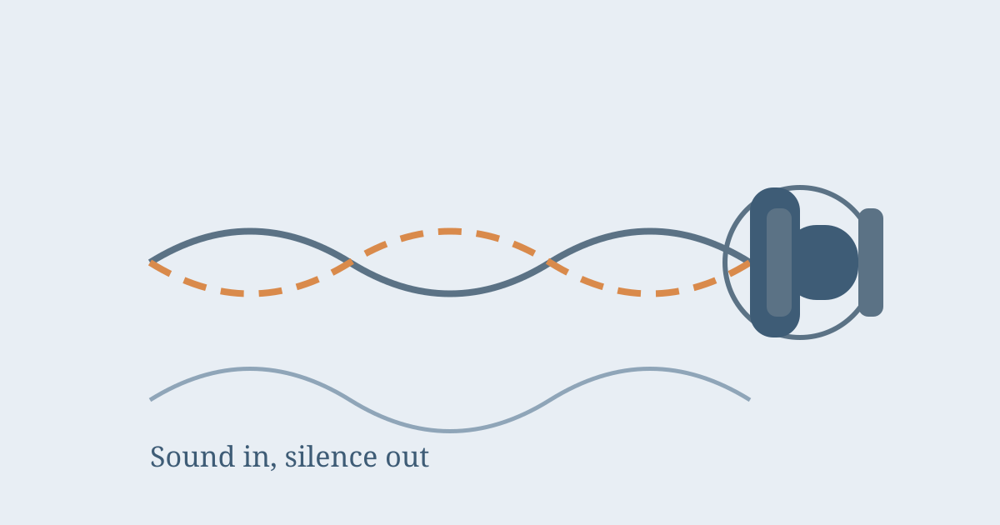

How Do Noise-Cancelling Headphones Work?

Put on a pair of noise-cancelling headphones on a noisy train, press a button, and the rumble of the engine seems to melt away, even though no music is playing yet. It feels like magic, but it is really a clever piece of physics: the headphones listen to the noise around you and play its exact opposite back at you, so the two sounds cancel each other out before they ever reach your ears.
To understand how that works, it helps to start with what sound actually is. Sound travels as waves of air pressure, rising and falling like ripples on water. A loud, low hum, such as an aeroplane engine, is a steady wave with regular peaks and troughs. If you could create a second wave that is the mirror image of the first, with its peaks exactly where the first wave has troughs, the two would add up to nothing. The air would barely move at all, and your ear would hear silence. That trick is called destructive interference, and it is the whole secret of active noise cancelling.
First, the Passive Part: Blocking Sound Physically
Before any electronics get involved, the headphones already block some noise simply by covering your ears. Thick ear cushions, a snug fit, and a closed cup design stop a good deal of sound from reaching your ears at all, especially higher-pitched sounds. This is passive noise isolation, and it works the same way earplugs or earmuffs do. It is why even with the cancelling switched off, a decent pair of over-ear headphones still makes the world noticeably quieter.
Passive isolation has limits, though. Low, rumbling sounds, like engines, air conditioning, or traffic, have long wavelengths that pass through padding quite easily. That is exactly where the active system steps in: it is strongest against the steady, low-frequency drone that padding alone cannot stop.
The Microphones Listen First
Active noise cancelling starts with tiny microphones built into the headphones. Their job is to listen to the world around you, not to your music. When a sound wave arrives, the microphones pick it up and send it to a small processor inside the headphones, which analyses the wave many thousands of times per second.
The processor then creates an anti-noise signal: a copy of the incoming wave, flipped upside down. Where the original wave pushes the air forward, the anti-noise pulls it back, and where the original pulls back, the anti-noise pushes forward. The headphone speakers play this anti-noise at the same time as the outside sound arrives at your ears, and the two waves cancel each other out. What is left is much closer to silence, and your music can then be played clearly on top of it, without you needing to turn the volume up to drown out the engine.
Feedforward, Feedback, and Hybrid Systems
Not all noise-cancelling headphones place their microphones in the same spot, and the placement changes how well they work. In a feedforward system, the microphones sit on the outside of the ear cups, listening to the noise before it reaches your ear. This gives the processor a head start, so it can prepare the anti-noise in time, but it cannot check whether the cancelling actually worked.
In a feedback system, the microphone sits inside the ear cup, close to your ear, listening to what actually gets through. This lets the system correct its own mistakes, but it reacts a fraction later, because it only hears the noise once it has already arrived. The best headphones today use a hybrid system, with microphones both outside and inside the cups, combining the early warning of feedforward with the self-checking of feedback. That is why premium models tend to cancel noise more completely than cheaper ones.
What Noise Cancelling Cannot Do
Noise cancelling is impressive, but it is not a force field, and knowing its limits explains a lot of everyday disappointments. It works best on steady, predictable sounds: engine drone, the hum of a train, office air conditioning. The processor can predict what the next fraction of a second of that sound will look like, and prepare the matching anti-noise.
It works far less well on sudden, irregular sounds: a person talking next to you, a door slamming, a dog barking. By the time the system has heard the sound and built its opposite, the sound is already over. Voices are also harder because they change pitch and volume constantly. So in a busy office, you will still hear your colleagues talking, just more quietly, while the air conditioning disappears almost entirely. Wind is another weak spot: strong wind blowing directly across the outer microphones sounds like noise to the system, and it can create a rushing sound of its own.
Transparency Mode: Cancelling in Reverse
Most modern noise-cancelling headphones also offer a transparency or ambient mode, which does the opposite of cancelling. It uses the same outer microphones to pick up the world around you and deliberately plays it into your ears, mixed with your music. That lets you hear a train announcement, a colleague's question, or traffic before crossing a road, without taking the headphones off. Some models can even be set to let voices through while still reducing background drone, which is handy in an office or at an airport gate.
Does It Affect Sound Quality or Your Ears?
A common worry is that playing anti-noise into your ears must be doing something strange to your hearing. In fact, the anti-noise is just sound, and because it cancels the outside noise, the total sound pressure reaching your eardrum is lower, not higher. That is also why many people can listen at a lower volume with cancelling switched on, which is kinder to their hearing over a long journey than cranking music up to compete with an engine.
Some people do feel a strange pressure or stuffiness when cancelling is on, especially on a plane. This is usually because the brain is used to hearing a constant low rumble, and its sudden absence feels odd, similar to the feeling of a change in air pressure. It is uncomfortable for some, but it is not the headphones creating pressure in your ears: the air pressure itself has not changed.
Common Misconceptions
One common belief is that noise-cancelling headphones make the world completely silent. They do not: they reduce noise, typically by a large amount for low drones and a smaller amount for everything else, but they do not remove all sound. Another is that they work without power. Active cancelling needs a battery and a processor, which is why the effect stops when the battery dies, even though the headphones may still play music passively. A third is that they are only for travellers. They are just as useful in a noisy office, a shared flat, or anywhere you want to focus, because reducing background drone makes it easier to concentrate even without music.
Frequently Asked Questions
Why can I still hear people talking with noise cancelling on?
Voices are irregular and change constantly, so the system cannot predict and cancel them the way it cancels a steady engine drone. It reduces them, but it cannot remove them entirely.
Do noise-cancelling headphones work without music playing?
Yes. The cancelling system works on its own, which is why many people wear them on flights just for the quiet, with nothing playing at all.
Is noise cancelling bad for your hearing?
No. It lowers the total sound reaching your ears, and it lets you listen at lower volumes. The feeling of pressure some people notice is the brain adjusting to the missing background rumble, not a change in air pressure.
Conclusion
Noise-cancelling headphones are a neat partnership between padding and physics. The cushions block what they can, the microphones listen to the rest, and the processor plays back a mirror-image wave that cancels the drone before it reaches you. They cannot silence a sudden shout or a barking dog, but against the steady roar of engines and air conditioning they are remarkably effective. The next time the cabin hum fades away at the press of a button, you are hearing destructive interference at work: two waves meeting, and quietly agreeing to be nothing at all.